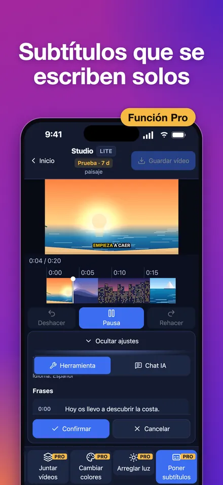
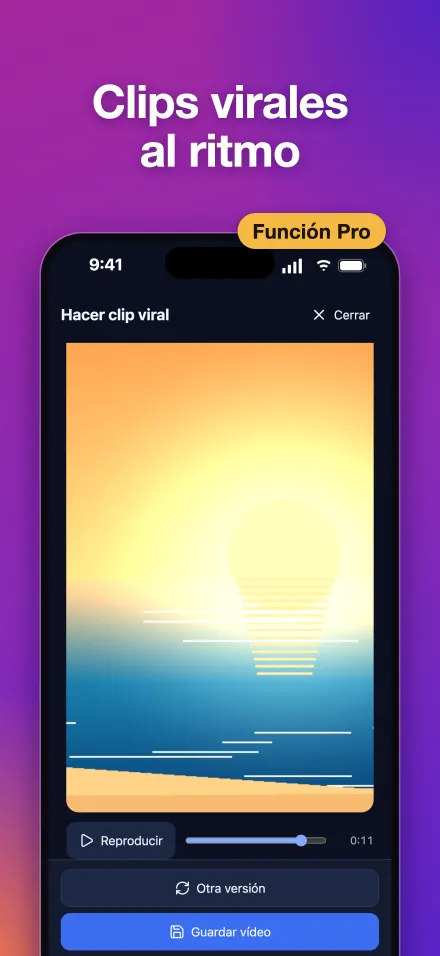
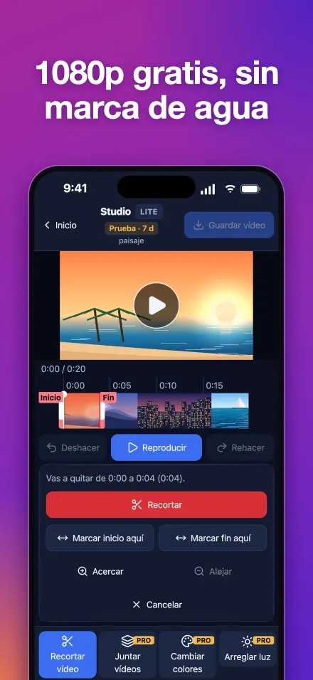
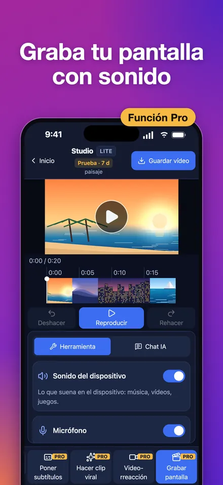
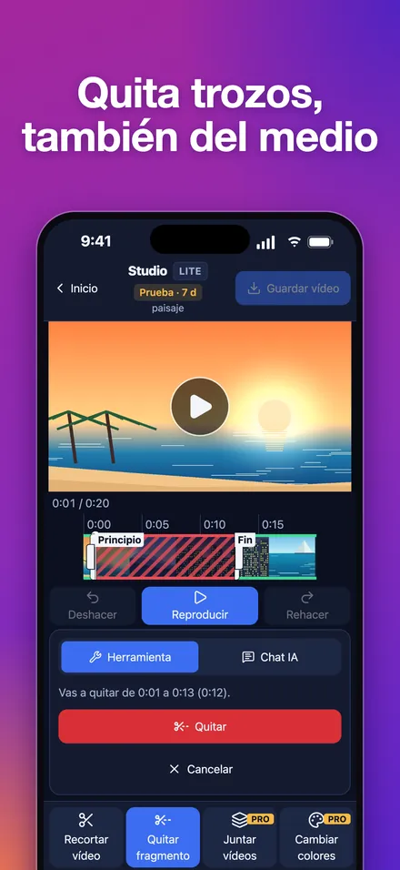
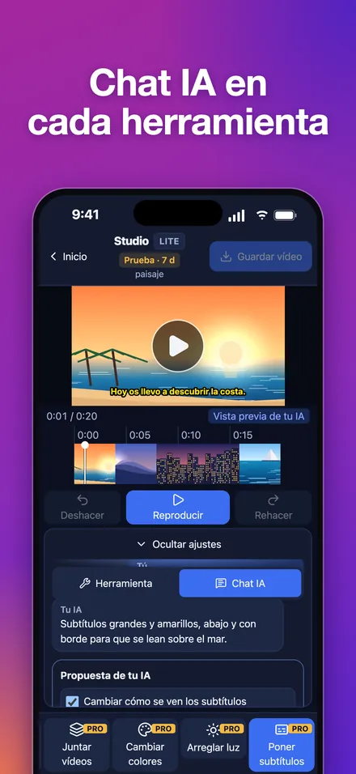

Studio: editor de vídeo fácil, con resultado profesional
Subtítulos automáticos, clips virales al ritmo y grabar pantalla en iPhone, iPad, Mac y Windows
Actualizado el
iPhone, iPad y Mac en el App Store · PC con Windows 10 u 11 en Microsoft Store
Qué es Studio
Studio es un editor de vídeo que además graba la pantalla, para iPhone, iPad, Mac y Windows (10 y 11). Es fácil de usar y da un acabado profesional: subtítulos automáticos que se escriben solos, clips virales verticales al ritmo de la música, color y luz corregidos con un toque y grabación de pantalla con sonido.
Recortar es gratis, con dos herramientas: «Recortar vídeo» se queda con una parte y «Quitar fragmento» quita un trozo, también del medio. Guardar en MP4 hasta 1080p es gratis, sin marca de agua y sin límite de minutos. Studio Pro cuesta 1,99 € al mes o 14,99 € al año en España, y al instalar tienes todas sus herramientas gratis 7 días, sin tarjeta.
Capturas






Lo que consigues
- Subtítulos que se escriben solos: con «Poner subtítulos», a partir de lo que se dice, en 20 idiomas, y se crean en tu aparato. Apunta los «Nombres o palabras que salen en el vídeo» para que los escriba bien (se quedan en tu aparato), corrige cualquier frase, elige el estilo (clásico o de redes, con la palabra que suena resaltada) y guárdalos también en .srt.
- Clips virales al ritmo: con «Hacer clip viral», eliges para dónde es (vertical 9:16 para Reels, Shorts y demás vídeos cortos; YouTube 16:9, hasta 4K con Pro; o feed 4:5 de Instagram y Facebook) y qué tipo de vídeo es (Automático o uno de 13: viaje, vlog, deporte, comida, tutorial…). Studio busca los mejores momentos, los encuadra y los corta al ritmo de música libre de derechos (CC0) incluida.
- Dos formas de recortar, gratis: «Recortar vídeo» se queda con la parte que marcas con las dos barras (en verde) y «Quitar fragmento» quita la que sobra (en rojo), también del medio. Ves cómo queda antes de confirmar y lo guardas en MP4 hasta 1080p, sin marca de agua ni límite de duración.
- Graba la pantalla: con «Grabar pantalla», con el sonido del aparato y tu micrófono; al terminar, la grabación se abre en el editor.
- Cambia los colores: en «Cambiar colores» tienes, con un toque, mejora automática o seis estilos (Cálido, Cine, Vivo, Frío, Blanco y negro, Atardecer). Mantén pulsado para ver el antes.
- Arregla la luz: con «Arreglar luz», toma a toma: recupera lo quemado y aclara lo oscuro.
- Vídeos de reacción: con «Videorreacción», sales tú con tu cámara en una esquina mientras se ve el vídeo.
- Miniaturas que destacan: con «Crear miniatura», Studio te propone los mejores fotogramas y les pones texto grande, en tamaño YouTube (1280×720), vertical o cuadrado. Si quieres, la creas con Gemini.
- Junta varios vídeos en uno: con «Juntar vídeos», eliges los vídeos y dónde entra cada uno (al principio, detrás de otro o al final), lo ves en la línea de tiempo y confirmas.
- Chat IA en cada herramienta: con tu propia IA. Pon la clave de API de la IA que ya pagas (Claude, OpenAI, Gemini o un servicio compatible) y pide los cambios con tus palabras («subtítulos más grandes y amarillos», «quita los silencios»); los ves en la vista previa y solo se quedan si confirmas. También saca títulos y hashtags para redes y traduce los subtítulos, y con una clave de Gemini crea la miniatura con IA.
Gratis, Pro y anuncios
| iPhone y iPad | Mac | Windows | |
|---|---|---|---|
| Gratis para siempre | Abrir, recortar, guardar hasta 1080p y compartir, sin marca de agua | Igual | Igual |
| Prueba al instalar | Todo Pro 7 días, sin tarjeta ni anuncios | Igual | Igual (hace falta internet para activarla) |
| Studio Pro | 1,99 €/mes o 14,99 €/año | La misma suscripción que en iPhone y iPad | 1,99 €/mes o 14,99 €/año, suscripción aparte |
| Anuncios sin Pro | Un banner, uno a pantalla completa en 1 de cada 5 aperturas y otro al guardar el vídeo | Ninguno | Ninguno |
| Una herramienta un rato | Un anuncio con recompensa visto entero la desbloquea 20 minutos; cada anuncio más suma otros 20 | El Mac enseña un código QR: lo escaneas con Studio en el iPhone, ves el anuncio entero y esa herramienta se desbloquea 20 minutos en el Mac | El PC enseña un código QR: lo escaneas con Studio en el iPhone, ves el anuncio entero y esa herramienta se desbloquea 20 minutos en el PC |
| Usa tu propia IA y Chat IA | No necesita Pro; lo que haga con una herramienta Pro pide Pro o su anuncio | Con Pro o la prueba | Con Pro o la prueba |
Los precios son los de España; en otros países, el precio local que enseña la tienda antes de pagar. Con Pro, además, guardas en más de 1080p si tu aparato lo permite.
En Apple, la suscripción se renueva sola salvo que la canceles al menos 24 horas antes del final del periodo, y se gestiona en tu cuenta de Apple; en Microsoft, se renueva hasta que desactives la facturación periódica en tu cuenta de Microsoft. Al acabar la prueba sigues con lo gratis y no se cobra nada.
Lo que gastes en tu IA lo pagas a tu proveedor: Studio no cobra por ello.
Plataformas y requisitos
- iPhone y iPad: iOS y iPadOS 16.4 o posterior, en el App Store.
- Mac: macOS 14 o posterior, en el App Store (Mac con Apple silicon o Intel).
- PC: Windows 10 (versión 2004) o Windows 11, en Microsoft Store. Abre tus vídeos desde el Explorador con «Abrir con» > Studio.
- Android: todavía no; llegará más adelante.
- Idiomas de la app: español e inglés. Los subtítulos automáticos reconocen 20 idiomas.
Tu vídeo es tuyo
Studio edita en tu aparato y no sube tus vídeos a sus servidores. Los subtítulos se crean en el propio aparato. Con «Usa tu propia IA» y «Chat IA», lo que escribes y la descripción de tu proyecto, nunca el vídeo, van directos de tu aparato al proveedor de IA que elijas, con tu clave y solo si aceptas: no pasan por ningún servidor de Studio. Los «Nombres o palabras que salen en el vídeo» de los subtítulos se quedan en tu aparato. Esta página no usa cookies ni rastreo. Todo el detalle, en la política de privacidad.
Qué no hace Studio
- No quita marcas de agua de vídeos ajenos.
- No descarga vídeos de redes sociales.
- No trae canciones con derechos de autor: la música del clip viral es libre de derechos (CC0).
- No está en Android todavía.
Preguntas frecuentes
¿Hay algún editor de vídeo gratis y sin marca de agua?
Sí. En Studio recortar un vídeo y guardarlo en MP4 hasta 1080p es gratis, sin marca de agua y sin límite de minutos, en iPhone, iPad, Mac y Windows.
¿Cómo quito un trozo del medio de un vídeo?
Abre el vídeo en Studio y toca «Quitar fragmento». Deja entre las dos barras lo que quieres quitar (sale en rojo, también si está en medio del vídeo), pulsa «Quitar», mira cómo queda y confirma con «Confirmar». Es gratis, sin marca de agua. Si lo que quieres es quedarte solo con una parte, usa «Recortar vídeo», donde lo verde se queda.
¿Cómo pongo subtítulos automáticos a un vídeo?
Abre el vídeo en Studio y toca «Poner subtítulos». Se escriben solos con lo que se dice, en 20 idiomas, y se crean en tu aparato: el audio no se envía a ningún servidor. Si apuntas los nombres o palabras que salen en el vídeo, los escribe bien. Puedes corregir cada frase, ponerlos al estilo de redes y guardarlos en .srt. Es una herramienta Pro.
¿Cómo grabo la pantalla del Mac con audio?
En Studio para Mac toca «Grabar pantalla» y deja activados «Sonido del dispositivo» y «Micrófono». Al terminar, la grabación se abre en el editor. Es una herramienta Pro.
¿Cómo grabo la pantalla en Windows 11?
Instala Studio desde Microsoft Store, toca «Grabar pantalla» y elige qué grabar. Graba el sonido del PC y tu micrófono, y también vale en Windows 10. Es una herramienta Pro.
¿Cómo junto varios vídeos en uno desde el móvil?
En Studio, toca «Juntar vídeos», elige los vídeos y dónde entra cada uno (al principio, detrás de otro o al final), míralo en la línea de tiempo y pulsa «Confirmar»: sale un solo vídeo. Es una herramienta Pro.
¿Cómo hago un clip vertical para redes con música sin copyright?
Usa «Hacer clip viral»: eliges para dónde es (vertical 9:16, YouTube 16:9 o feed 4:5) y qué tipo de vídeo es (Automático o uno de 13), y Studio monta lo mejor con encuadre automático, cortes al ritmo y una canción libre de derechos (CC0) incluida. Es una herramienta Pro.
¿Cómo hago una miniatura para YouTube con IA?
En «Crear miniatura» Studio te propone los mejores fotogramas y les pones texto grande en 1280×720. Con tu clave de Gemini en «Usa tu propia IA», la IA crea la portada dentro de la app; o la creas con Gemini en el navegador.
¿Cómo arreglo la luz y el color de un vídeo oscuro?
Con «Arreglar luz» Studio aclara lo oscuro y recupera lo quemado, toma a toma. Con «Cambiar colores» tienes mejora automática y seis estilos. Lo que está blanco puro no se recupera, solo se suaviza.
¿Cuánto cuesta Studio Pro?
En España, 1,99 € al mes o 14,99 € al año; en otros países, el precio local de la tienda. Al instalar tienes todas las herramientas Pro gratis 7 días, sin tarjeta, y al acabar sigues con lo gratis sin que se cobre nada.
¿Puedo usar una herramienta Pro sin suscribirme?
Sí. En iPhone y iPad, un anuncio con recompensa visto entero desbloquea esa herramienta 20 minutos, y cada anuncio más suma otros 20. En Mac y Windows no hay anuncios: el ordenador enseña un código QR, lo escaneas con Studio en el iPhone, ves allí el anuncio y la herramienta se desbloquea 20 minutos en el ordenador.
¿Cómo pido cambios a una IA dentro de Studio (Chat IA)?
Pon en «Usa tu propia IA» la clave de API de la IA que ya usas (Claude, ChatGPT, Gemini u otra compatible). Después, en cualquier herramienta abre la pestaña «Chat IA» y pide el cambio con tus palabras, por ejemplo «subtítulos más grandes y amarillos» o «quita los silencios». La IA lo propone, lo ves en la vista previa y solo se queda si pulsas «Confirmar». En iPhone y iPad no necesita Pro; en Mac y Windows, sí (o la prueba de 7 días). Lo que gastes lo cobra tu proveedor, no Studio.
¿Necesito saber editar vídeo para usar Studio?
No hace falta experiencia: ves cada cambio al momento, siempre puedes deshacer y las herramientas hacen el trabajo difícil (subtítulos, cortes al ritmo, luz y color). El resultado tiene acabado profesional.
¿Studio sube mis vídeos a internet?
No. Studio edita en tu aparato y no sube tus vídeos a sus servidores. Solo si usas «Usa tu propia IA» o «Chat IA», lo que escribes y la descripción de tu proyecto (nunca el vídeo ni el audio) van directos de tu aparato al proveedor de IA que elijas, con tu clave y solo si aceptas; no pasan por ningún servidor de Studio. Los «Nombres o palabras que salen en el vídeo» de los subtítulos se quedan en tu aparato.
¿Hay que tener la app actualizada?
Algunas actualizaciones son obligatorias para seguir usándola; si hace falta una, la app te avisa y te lleva a la tienda.
Dudas, fallos o sugerencias: gabrielmicovictoria@gmail.com.
Ayuda y soporte · Política de privacidad · English